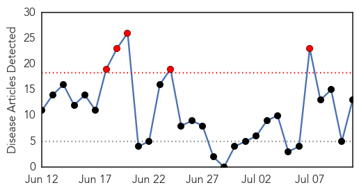

Swine Flu
30-Day Web Trend
0 alerts, 0 warnings

30-Day Twitter Trend
0 alerts, 0 warnings

Article Locations

Article Confidences

Top Articles:
- 0.999
- Flu season shows signs of waning; young and middle-aged adults have been hit hardest
- 0.982
- Lawmakers Say Migrant Children Are Diseased, Should Be Denied Shelter
- 0.926
- Large international study suggests flu drugs saved lives in 2009 H1N1 pandemic
- 0.833
- Tamiflu's effectiveness in cutting flu hospitalizations questioned
- 0.637
- Government Downplays Immigrant Disease Crisis
Top Tweets:
-
No tweets found for Jul 11, 2014
Chikungunya
30-Day Web Trend
5 alerts, 0 warnings

30-Day Twitter Trend
1 alerts, 0 warnings

Article Locations

Article Confidences

Top Articles:
- 0.999
- Harris County confirms 1st chikungunya case in Houston area - KYTX CBS19.tv - News, Weather, & Sports
- 0.999
- Harris County confirms first case of chikungunya, mosquito-borne disease
- 0.997
- Chikungunya Virus Confirmed in SC
- 0.995
- This is a sobering statistic on the spread of Chikungunya across the Caribbean
- 0.995
- Chikungunya virus found in S.C. resident
- 0.995
- The Chikungunya Virus Spreads in Haiti
- 0.992
- The Nassau Guardian
- 0.989
- DHEC confirms first case of 'Chikungunya' in Palmetto State
- 0.987
- Mississippi has 2 more cases of mosquito-borne virus
- 0.985
- Two more Mississippians confirmed having dangerous illness from Caribbean
- 0.985
- Two new Chikungunya cases confirmed in Mississippi
- 0.981
- 'Major epidemic' of mosquito-born chikungunya hits French West Indies
- 0.969
- Harris County has first case of mosquito-borne Chikungunya virus
Top Tweets:
-
No tweets found for Jul 11, 2014